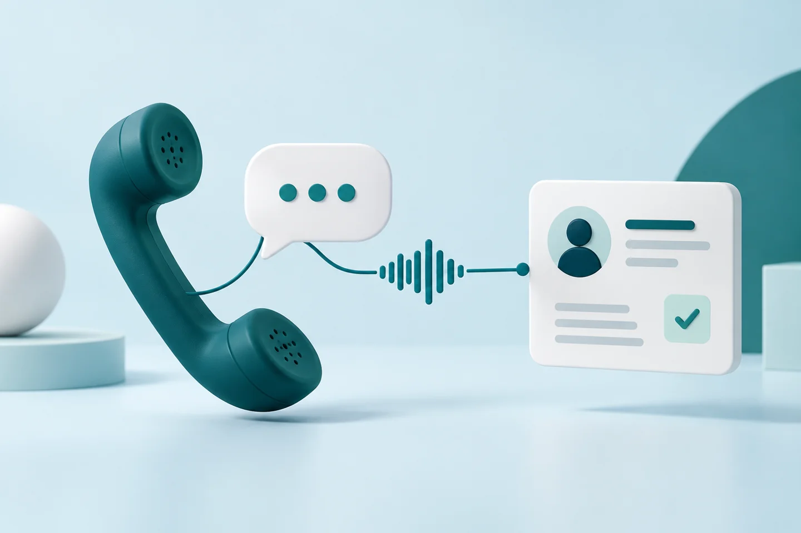
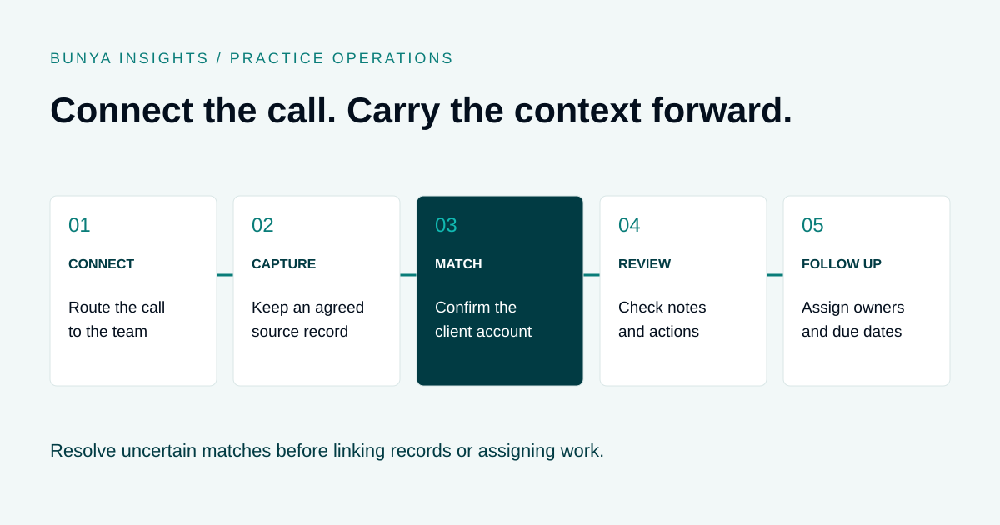

Practice operations
Microsoft Teams Phone for Financial Advice Firms: Connect Calls to Client Work
Connect the phone conversation to the client record and the next action.

THE SHORT ANSWER
Teams Phone can form part of a business calling setup, but an advice firm also needs to plan numbers, licensing, routing and support. Connecting calls to client work adds further steps: supported capture, reliable account matching, reviewed notes and assigned follow-up. Confirm each part of the workflow before rollout.

What does Teams Phone add?
A Teams meeting and a call to a client’s mobile number are different scenarios. Before replacing a business phone setup, confirm how calls to and from public telephone numbers will connect, which users need access and who will support the service.
Microsoft documents several public telephone network connection options for Teams, including Calling Plans, Operator Connect, Teams Phone Mobile and Direct Routing. Availability and the deployment model vary. See Microsoft’s PSTN connectivity documentation.
Having Microsoft Teams does not by itself establish that your firm has the licences, carrier connection or configuration required for its proposed business calling setup. Have the provider confirm the complete arrangement for your users and location.
Plan what happens after the call
For an advice firm, answering a call is only part of the workflow. The team may need to find the right client, understand the discussion and carry an agreed action through to completion.
- Route the call. Agree how business numbers, reception, transfers and unanswered calls should work.
- Confirm the context. Identify the relevant client or account using the firm’s process. Treat an incoming number as a possible match, not proof of identity.
- Capture the record where authorised. Use the agreed recording or note-taking process for the supported call type.
- Review the output. Check notes, decisions and proposed actions before accepting them as the firm’s record.
- Assign the next step. Link the checked record and follow-up to the client, with a responsible person and due date.
Agree a fallback when capture is unavailable or a client cannot be matched. The call can still need follow-up even when an automated step fails.
Separate calling from the connected workflow
Ask your supplier to describe each layer of the solution. A working dial pad does not demonstrate client matching, and a saved recording does not demonstrate a reviewed file note.
| Layer | Confirm | Test |
|---|---|---|
| Calling | Users, numbers, carrier connection and routing. | Inbound, outbound, transfers and missed calls. |
| Capture | Supported call types, policies and recording services. | Eligible capture and the fallback when unavailable. |
| Storage | Location, access, retention and ownership. | Authorised retrieval and restricted access. |
| Client context | Matching rules and exception handling. | Shared numbers, unknown callers and wrong matches. |
| Follow-up | Draft outputs, review and task ownership. | Corrections, approval and completed actions. |
Worked example: a shared phone number
Illustrative example using fictional information. Two clients share a household phone number. One calls to ask about documents needed for an upcoming review. A number lookup returns both records.
The team confirms the caller and selects the appropriate record using its normal identity process. The conversation is linked only after the ambiguity is resolved. Where an eligible transcript is available, AI prepares a draft note and proposed document-request task.
The reviewer checks which documents were discussed and whether anything was actually agreed. An authorised person then assigns the request to the team member responsible for the review. A household phone match has helped find context without silently deciding who gave the instruction.
The same principle applies to withheld numbers, new clients and assistants calling on someone else’s behalf: make uncertainty visible and give someone responsibility for resolving it.
Be specific about recordings and AI notes
Do not assume that every call and meeting can use the same recording or transcription process. Confirm supported scenarios and services for the proposed setup, including transfers, external callers and meetings.
Before enabling capture, agree the applicable recording, privacy and licensee requirements with the people responsible for them. Define notification and consent arrangements, permitted access, retention and the alternative when recording is unsuitable.
AI-generated notes and emails are drafts. Review client identity, figures, decisions and suggested actions before filing or sending them. For a fuller template and example, read AI Meeting Notes for Financial Advisers.
A pilot checklist for your advice firm
Use an approved pilot group and synthetic or otherwise authorised scenarios. Test the actual devices, staff roles and call journeys the firm intends to use.
- Numbers: confirm eligibility, porting dependencies and who coordinates the change. Keep a continuity plan for the transition.
- Routing: test reception, transfers, unanswered calls, voicemail and out-of-hours handling as scoped.
- Devices and connection: test call quality in the locations where staff work, including the agreed fallback for disruption.
- Client matching: test shared, unknown and withheld numbers and the correction process for mistakes.
- Capture: check supported scenarios and confirm that unsupported scenarios have a clear manual process.
- Permissions: verify who can retrieve a record and who cannot.
- Follow-up: correct a draft, approve an action and confirm the responsible person can find it.
- Support: agree who handles carrier issues, Microsoft configuration and workflow failures.
Record acceptance criteria and unresolved issues before rollout. Do not judge success only by whether the first test call connects.
Ask for the full cost and support picture
A useful quote separates implementation from recurring services. Ask about Microsoft licensing, telephone connectivity, number charges, recording services, storage, AI consumption and managed support. Include any overlap with the existing phone service during transition.
Confirm which organisation owns each support issue and how it is escalated. A problem with call routing and a problem linking a transcript to a client may have different owners. Give staff one clear way to report the issue without needing to diagnose it first.
Where Bunya Voice fits
Bunya Voice connects supported calling and meeting records to SharePoint and the relevant Power Platform account. For eligible client meetings, it prepares notes, actions and a follow-up email for human review.
The Blueprint defines users, numbers, supported call types, licensing, recording arrangements and account matching. Where the workflow cannot confidently identify the account, the team reviews the exception.
Command Centre provides the wider client-work context. Ask to see the complete journey in a demo: a supported conversation, the source record, the account link, a reviewed draft and the next action.
Common questions
Can we keep our business phone number?
That depends on number eligibility, the current provider and the proposed service. Confirm portability, timing and continuity arrangements before committing to a change.
Does our Microsoft 365 subscription include everything?
Have your provider assess the actual licences and calling arrangement. Do not assume that access to Teams covers public telephone calling, recording or the connected client workflow.
Will every call appear against the right client automatically?
That depends on supported capture and matching rules. Shared or unknown numbers need an exception process, and staff should be able to correct a wrong match.
Can AI send the follow-up for us?
The Bunya Voice workflow described here prepares follow-up for review. Authorised people check the content before it is sent. Confirm the exact approval and sending process in your scope.
How is this different from AI meeting notes?
Meeting notes focus on preparing a record of the discussion. A connected calling workflow also covers numbers, routing, client context, storage, exceptions and the work assigned afterwards.
Sources and scope
Microsoft’s PSTN connectivity documentation, checked 20 September 2026. The pilot checklist is practical planning guidance; availability, licensing and integration scope need confirmation for your firm.